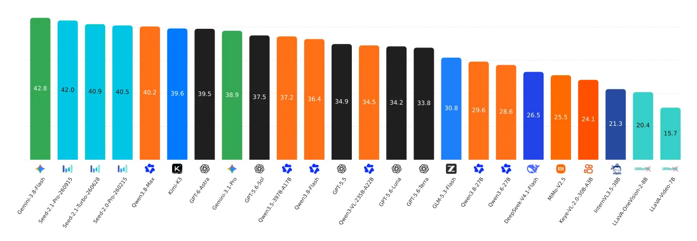
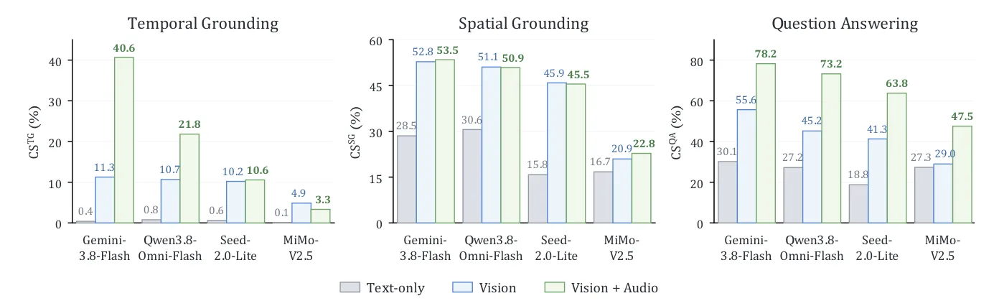

O Problema da Avaliação Fragmentada
A avaliação de Modelos de Linguagem Multimodais (MLLMs) tem sido historicamente fragmentada. Benchmarks existentes tendem a focar em apenas uma dimensão do entendimento de vídeo: ou são puramente visuais, ignorando o áudio; ou avaliam apenas perguntas de múltipla escolha, sem exigir que o modelo localize precisamente onde e quando um evento ocorre no tempo ou no espaço. Essa limitação impede um diagnóstico sistemático das capacidades reais dos modelos em cenários complexos, onde a percepção humana integra naturalmente pistas visuais, auditivas e linguísticas.
Os autores identificam quatro dimensões críticas que a maioria dos benchmarks atuais não cobre simultaneamente: a especificação do alvo (apenas texto ou texto com imagem de referência), o tipo de evidência do vídeo (visual ou áudio-visual nativo), a cobertura das tarefas (grounding temporal, espacial e question answering) e a duração do vídeo (curto, médio ou longo). Sem uma ferramenta que una essas dimensões, é impossível medir se um modelo realmente entende o vídeo ou apenas memorizou padrões superficiais de texto e imagem.
Para resolver essa lacuna, a equipe do PolyU VCLAB, em colaboração com OPPO Research Institute e outras instituições, apresenta o OmniCompass. Este não é apenas mais um conjunto de dados, mas um framework de avaliação holístico projetado para forçar os MLLMs a realizar tarefas de fundição (grounding) e compreensão de forma rigorosa. O objetivo é expor as falhas na alinhamento multimodal e na consistência lógica dos modelos atuais.

Arquitetura do Benchmark: Duas Faixas, Três Tarefas
O OmniCompass é estruturado em duas faixas de avaliação distintas, cada uma projetada para testar capacidades específicas de integração multimodal. A primeira faixa, OmniCompass-VL, avalia modelos Visão-Linguagem. Ela contém 820 vídeos manualmente anotados, totalizando 2.460 instâncias de avaliação. Esta faixa é dividida em três tipos de duração: vídeos curtos, médios e longos, cobrindo sete domínios diferentes, desde notícias até esportes. O foco aqui é a capacidade do modelo de extrair evidências puramente visuais para responder a perguntas ou localizar eventos.
A segunda faixa, OmniCompass-AV, é dedicada a modelos omnimodais que suportam áudio nativo. Este subconjunto é mais restrito, contendo 240 vídeos e 720 instâncias, mas é narrativamente e auditivamente rico. A inclusão do áudio não é opcional; ela é parte integral da evidência necessária para resolver muitas das perguntas. Isso permite avaliar se os modelos são capazes de alinhar informações auditivas com eventos visuais, uma habilidade crucial para a compreensão contextual profunda.
Dentro de cada faixa, três tarefas complementares são executadas. A Fundição Temporal (TG) exige que o modelo identifique o intervalo de tempo exato em que um alvo aparece. A Fundição Espacial (SG) pede a localização exata do alvo dentro do quadro (bounding box ou segmentação). Por fim, o Question Answering (QA) testa a compreensão semântica e a capacidade de raciocínio sobre o que acontece. Essa combinação força o modelo a não apenas 'ver' o vídeo, mas a estruturá-lo mentalmente no espaço e no tempo.
Metodologia de Avaliação e Configuração Experimental
A rigorosidade do benchmark é reforçada pela metodologia de entrada. Para garantir justiça comparativa, os vídeos são processados com amostragem uniforme de quadros. Modelos proprietários e open-source com mais de 100 bilhões de parâmetros recebem 64 quadros, enquanto modelos menores recebem 32. Modelos da série GPT utilizam 49 quadros para acomodar a imagem de referência dentro de seus limites de contexto. Um detalhe técnico importante é a inclusão de timestamps em cada quadro, uma técnica conhecida por melhorar o alinhamento temporal dos modelos.
A avaliação abrangeu 50 MLLMs distintos, incluindo líderes proprietários como as séries Gemini (Google), GPT (OpenAI), Seed e Qwen, além de uma ampla gama de modelos open-source como Kimi-K3, GLM-5.3-Flash, DeepSeek-V4.1-Flash, Qwen open-source, InternVL3.5, e séries LLaVA. Na faixa AV, o foco recai sobre modelos com suporte nativo a áudio, como Qwen-Omni, Seed-2.0-Lite, MiniCPM-o e VideoLLaMA2. Essa diversidade permite identificar não apenas quem está na liderança, mas quais arquiteturas falham em tarefas específicas.
As anotações são feitas manualmente com verificação de qualidade em múltiplas rodadas. Isso garante que o ground truth (a resposta correta) seja preciso, eliminando ruídos que poderiam inflacionar artificialmente as métricas de modelos menos sofisticados. A estrutura de pareamento entre as especificações de texto e texto+imagem é aplicada rigorosamente: o mesmo alvo, no mesmo vídeo, com a mesma semântica de tarefa, é submetido a duas variações de entrada para testar a robustez da percepção do modelo.

Resultados: A Liderança Proprietária e o Gap de Código Aberto
Os resultados do OmniCompass-VL revelam uma hierarquia clara. O modelo Gemini-3.8-Flash da Google alcançou a pontuação mais alta entre os proprietários, com 42,8% na média geral. Entre os modelos de código aberto, o Kimi-K3 liderou com 39,6%. Embora a diferença numérica pareça pequena, ela representa uma lacuna significativa em tarefas de grounding fino. Modelos como GPT-5.6-Terra e GPT-5.5-Luna tiveram desempenhos mais baixos, indicando que o tamanho do modelo ou a marca não garantem automaticamente superioridade em compreensão de vídeo complexa.
Ao analisar as sub-tarefas, fica evidente que a Fundição Espacial (SG) e Temporal (TG) são os pontos mais fracos. Mesmo os melhores modelos tiveram dificuldades em localizar com precisão os intervalos temporais exatos. A métrica mtIoU (mean intersection over union) para grounding temporal mostrou que muitos modelos falham em delimitar corretamente o início e o fim de um evento, muitas vezes incluindo ruído temporal ou perdendo partes cruciais da ação. Isso sugere que os mecanismos de atenção dos modelos ainda não são suficientemente refinados para capturar a granularidade temporal necessária.
No Question Answering, a performance foi melhor, mas ainda longe do perfeito. A consistência entre as especificações de texto e texto+imagem foi um divisor de águas. Modelos que dependiam fortemente de pistas textuais no prompt tendiam a falhar quando a imagem de referência era introduzida, ou vice-versa. Isso indica uma falta de alinhamento robusto entre as representações visuais e textuais no espaço latente dos modelos.
O Impacto do Áudio na Compreensão Omnimodal
A faixa OmniCompass-AV trouxe insights críticos sobre a integração de áudio. A Figura 7 do paper ilustra que a adição de áudio nativo melhora significativamente a precisão dos modelos em tarefas de compreensão. Quando os modelos são avaliados apenas com vídeo (Vision), eles perdem informações contextuais vitais. Com o Vision+Audio, a métrica CS sobe, demonstrando que o áudio não é apenas um complemento, mas muitas vezes a chave para desambiguar eventos visuais ambíguos.
Por exemplo, em notícias ou diálogos, a identificação de quem está falando ou o tom da voz pode ser essencial para responder perguntas sobre intenções ou ações. Modelos que ignoram o áudio, mesmo que tenham alta capacidade visual, têm seu desempenho severamente penalizado nesta faixa. A análise mostrou que a vinculação de eventos áudio-visuais (audio-visual event binding) é um dos maiores desafios atuais. Muitos modelos processam áudio e vídeo em streams separados que não se comunicam eficientemente durante o raciocínio.
Além disso, a consistência no ambiente AV foi ainda mais desafiadora. A introdução de uma terceira modalidade aumentou a complexidade do espaço de busca. Modelos proprietários mantiveram uma vantagem, mas o gap para os open-source aumentou nesta faixa. Isso sugere que o fine-tuning para multimodalidade áudio-visual é uma área onde a indústria proprietária tem investido mais recursos, ou que as arquiteturas open-source atuais ainda não escalam bem para a integração tripla (texto, imagem, áudio).

Limitações e Direções Futuras
Apesar de sua abrangência, o OmniCompass não é isento de limitações. O conjunto de dados, embora diversificado, ainda cobre apenas sete domínios. A generalização para outros contextos culturais ou linguísticos não foi testada extensivamente. Além disso, a amostragem de quadros, embora padronizada, pode não capturar movimentos rápidos ou detalhes sutis que ocorrem entre os frames selecionados, especialmente em vídeos de alta velocidade.
Outra limitação é a dependência de anotações manuais. Embora a qualidade seja alta, o custo de escalonar esse tipo de avaliação para conjuntos de dados massivos é proibitivo. O benchmark serve mais como um padrão de ouro para diagnóstico do que como um teste de throughput para milhares de modelos. Os autores reconhecem que métricas automáticas de consistência podem ser aprimoradas para reduzir a carga humana na validação.
Os resultados também apontam para um caminho claro para a pesquisa futura: a necessidade de melhores mecanismos de alinhamento multimodal. Os modelos precisam evoluir de uma simples concatenação de features visuais e textuais para uma integração profunda onde o áudio, o vídeo e o texto coexistem em um espaço semântico unificado. A consistência entre especificações de texto e imagem é um sintoma dessa falha de alinhamento, e resolvê-la exigirá avanços na arquitetura dos transformers e nos métodos de pré-treinamento.
Conclusão
O OmniCompass estabelece um novo padrão para a avaliação de MLLMs. Ao unificar grounding temporal, espacial e question answering sob pares de especificações textuais e visuais, ele expõe falhas que benchmarks anteriores ocultavam. A descoberta de que a consistência é tão difícil quanto a precisão isolada é um achado valioso para a comunidade.
Para desenvolvedores e cientistas de dados, a mensagem é clara: a simples melhoria de acurácia em QA não é suficiente. A capacidade de um modelo de localizar com precisão e manter a coerência através de diferentes modalidades é o verdadeiro indicador de maturidade. O OmniCompass fornece a bússola (compass) necessária para navegar esse terreno complexo, apontando onde a tecnologia atual falha e onde a próxima geração de modelos precisa se concentrar.
O que fica
- O benchmark introduz duas faixas de avaliação: uma focada em evidências visuais (VL) e outra em áudio-visuais (AV), cobrindo grounding temporal, espacial e perguntas abertas.
- A métrica CS (Consistency Score) exige que o modelo produza previsões coerentes quando o alvo é especificado apenas por texto ou por texto mais imagem de referência.
- Modelos proprietários lideram os rankings, mas a precisão no grounding fino permanece um gargalo crítico, especialmente para soluções de código aberto.
- A inclusão de áudio nativo melhora significativamente a compreensão de eventos, revelando que muitos modelos ignoram pistas auditivas cruciais.
Paper original: OmniCompass: A Holistic Benchmark for Omni-Modal Video Grounding and Understanding
Comentários
Nenhum comentário ainda. Seja o primeiro.